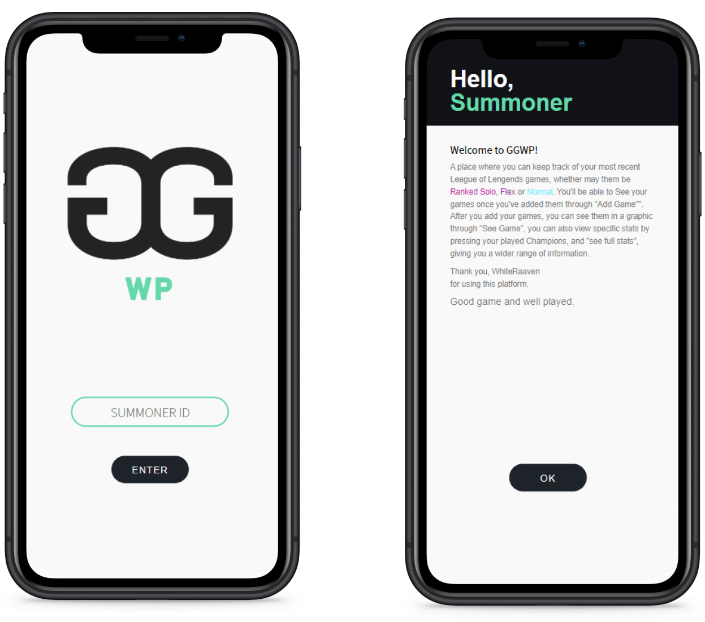
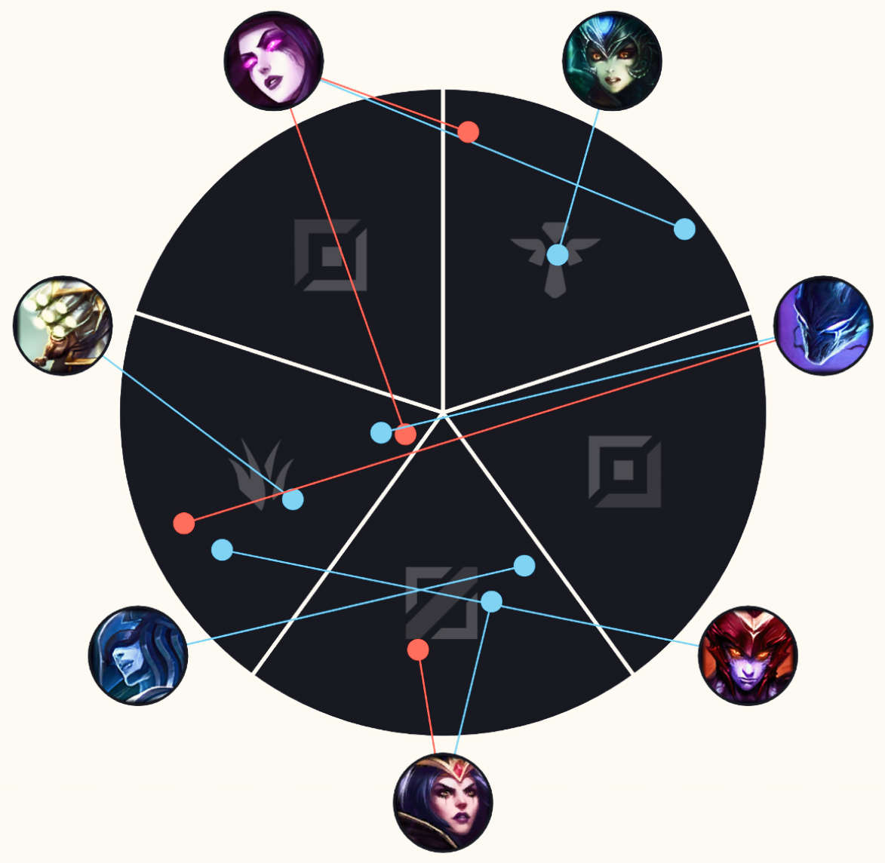

Home
Home Anathema
Anathema- afeiçoa-te
- Sky Tales
- Mint Insight
- [UP] Arte
- GG WP
- desenha-me um poema.
- About

“GG WP” is a platform that allows players to visualize their game data from League of Legends.
“GG WP” was developed for both smartphone and computer, and allows players to track their progress in League of Legends. Through it, players have access to several statistics, such as their win rate with each champion and role, as well as their KDA.
The platform separates the data entried in the three different game modes: Normal, Ranked Flex and Ranked Solo Duo.
Project developed during the Communication Design Bachelor's Degree
December 2020 - January 2021
Co-Author
Software
Figma
Adobe Illustrator
Development
HTML & CSS
JavaScript (JQuery, P5.js)
There is a brief explanation about the app the first time the user logs in with their Summoner ID
In the settings menu the user can change the theme from light to dark mode, mute the app sounds and log off

The players can see their game data summarized in a graphic.
Each dot represents an inserted game in the app. Its color represents whether it was won or lost.
The role played is shown by the circle's slice the dot is placed in.
Each dot is connected to the champion the game was played with.
A desktop version is also available
To create a more immersive user experience, the platform uses different sound effects present in the game League of Legends, such as its main soundtrack and the different champions' voice lines.